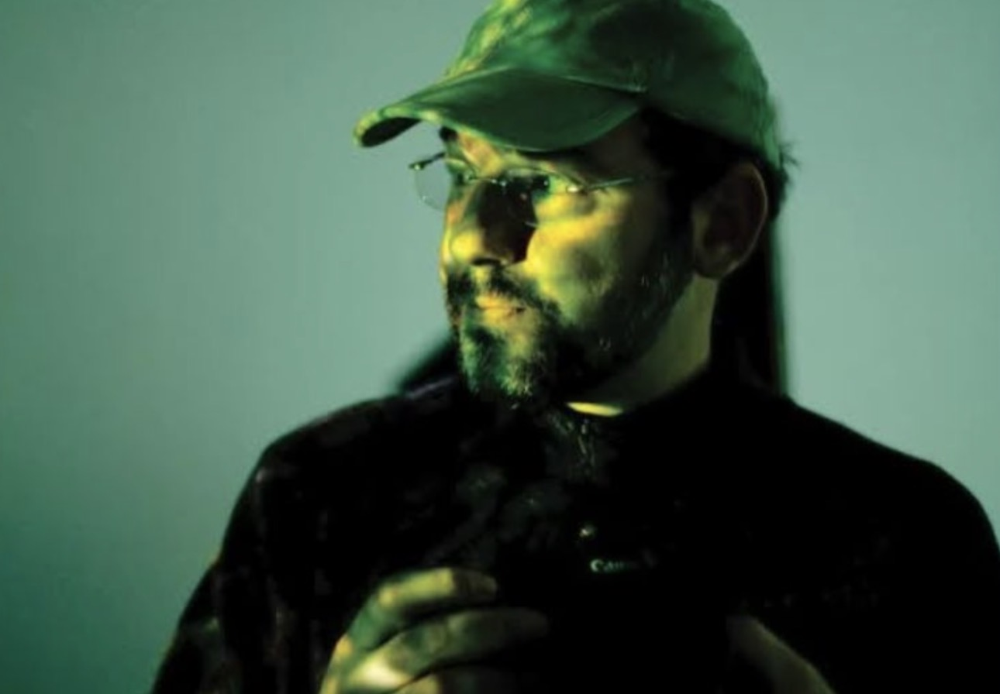

Mais do que aprender a usar uma câmera, descubra o seu jeito de ver o mundo, construa sua linguagem autoral e produza seu próprio ensaio em Ubatuba.
Ubatuba é o território perfeito para pausar, olhar e transformar paisagens e rostos em memória visual.
Vamos falar de técnica, luz, câmeras e lentes, mas também de retrato, fotojornalismo e construção de ensaio. Técnica se aprende; o que importa é o seu jeito de ver.
Cada participante vai escolher um tema, desenvolver uma ideia e produzir seu próprio ensaio. Ao final, você terá uma série de 10 fotografias pensadas, fotografadas e editadas.
Como começar, como se posicionar, quais caminhos profissionais existem e como transformar a fotografia em uma possibilidade real de trabalho, expressão e renda.
Uma jornada estruturada para guiar você do primeiro olhar até a edição final.
Apresentação, luz, enquadramento e intenção. Sala e prática curta.
Luz natural, sombra, exposição e retrato. Teoria e prática próxima.
Paisagem, rua, detalhes e narrativa de Ubatuba. Encontro predominantemente prático.
Seleção, edição, sequência e leitura coletiva da série final de 10 fotografias.
Antes do início da turma em outubro, teremos um encontro aberto de 1h30 na Vila Caiçara. Vamos conversar sobre fotografia, apresentar a proposta e tirar dúvidas. Traga uma foto antiga ou importante!
Formado em Ciências Sociais pela USP, Kiko começou a fotografar em 1995 durante uma viagem ao Sudeste Asiático e foi contratado como fotojornalista pela Editora Abril em 1997.
Atuou como fotógrafo para veículos de grande expressão como National Geographic, Revista Trip e Jornal Valor, e como editor de fotografia nas revistas Istoé, Revista Trip e Revista Expressions (American Express). Desde 2011, é sócio-fundador da Pletora Filmes.

Fotógrafo & Produtor
"Com uma trajetória construída entre reportagens, retratos e expedições, Kiko conduz cada participante a transformar técnica, repertório e experiência em uma fotografia com identidade própria."
"Fotografar é aprender a olhar com intenção. Kiko convida cada participante a encontrar, na prática, uma linguagem que seja verdadeiramente sua."
Investimento para o ciclo completo de quatro encontros presenciais em Ubatuba.
Vagas limitadas de 10 a 15 participantes para assegurar atendimento personalizado.